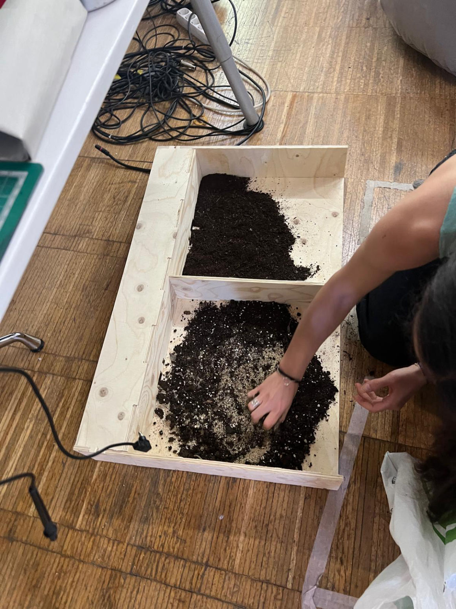

For this task i made 2 objects.
1. Storage bakets for MDEF classroom
2. Interactive soil sensor stand
There were many times I had to change the files and change the dimensions and it was a good experience to learn how not to repeat the same mistakes.

Working on the Rhino models for the CNC was very fun as I learned a lot and got to understand the machine a little better. Josep and Mikkel really helped me a lot to make the files and to print. I had to redo the files a few times as I had initially accounted for a thinner material of 6mm but after discussing that the product would be something that people would stand on to interact so we went for a thicker material which was 9mm and changed the screw to 6mm and redid the Rhino vector drawing with the dog ears for the new screws and I also learned about dimensionality and directions of screws, differences between one blade and 2 blade screws, and how to decide which one to use.
While cutting the box for the microchallenge, I had to stop the process twice since the material was not secured to the base with enough screws and some of the pieces started flying away during the cut. I had to stop and secure the material with more screws twice. It was the first time that I climbed onto the machine to reach the point to drill and it was a good experience and I learned to add more supports and to be patient while I do it, but also keep an eye on the entire printing process and make sure that none of the pieces break away or are not unusable completely. And thankfully, none of the pieces were unusable and I was able to use all of them to build the final product.
I was able to assemble the pieces by fitting them together and I reinforced the intersections with nails just to ease my anxiety and also make sure that it stays intact and is easy to carry through all of the exhibits and all of the days of events.
Overall, it was a great learning experience and it motivated me to think about all the possibilities of including such a scale into my area of interest. I'm intrigued by the possibilities for designing urban spaces using modularity and changing perceptions of safety by having modular spaces that work as different spaces and the possibilities of using CNCs and 2D fabrication to create simple open plans that can be used anywhere and like the purposes of creating temporary safety zones for areas of self-defense, for structures that can be things like that, or from the perspective of design education and collaboration. It can be used to create modular structures and adding modularity to it. It can be added and removed to create various designs and patterns for ideation and varying levels of urban street safety and aesthetics in different parts of Barcelona.
I am grateful to know how to use the machine more and to feel a bit more confident in working with it and making all the cutting files and like which is 90% of the work honestly was really really nice and it took a while but we got there.